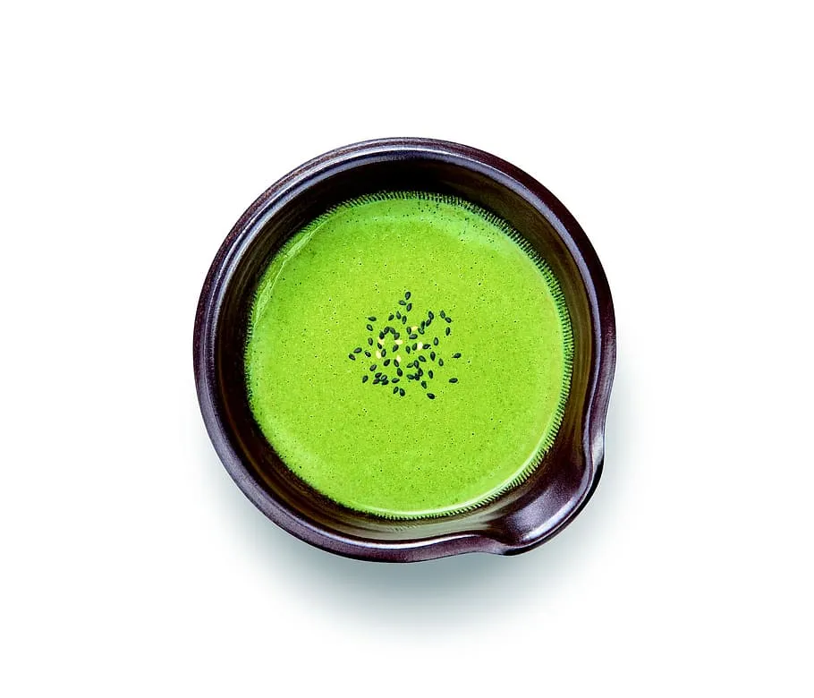

Types of Tea in Sri Lanka
Ceylon's Finest Tea
There area many different varieties of Tea available in Sri Lanka. Each Tea type has a unique flavour to it and each Tea type offers different health benefits. All the different flavours of Tea typically come from the same plant but it is the soil type and the climate that provides each plant a unique taste. Amongst all of the wonderful flavours Sri Lankans mostly enjoy Black Tea with strong Milk and Sugar. Here are some of the Tea Types that Sri Lanka has to offer:
- Black Tea
- Green Tea
- White Tea
- Yellow Tea
- Oolong Tea
- Silver Tea
- Herbal Tea
-
Black Tea
Originally Black Tea was only made in China. As years passed China started exporting Black Tea to the Eastern society and gradually the methods were widely spread all across the world. Slowly Black Tea became the favorite Tea in many parts of the world. The reason for this is because Black Tea’s taste remains fresh the longest compared to other Teas. Sri-Lanka is also very well known for its Black Tea and is also considered as one of the best flavored Black Tea in the world.

-

Green Tea
Green Tea was the discovered around the 2737 BC and it was the first Tea that was discovered. Although Green Tea was initially discovered in China, the same roots are available in most of the South Asian Countries. Unlike other Tea types, the Green Tea is known for its extremely refreshing taste and thus this Tea is remembered as one of the important Tea discoveries.
-
White Tea
White Tea was discovered in the year 1857. Unlike other Tea Leaves, the buds of the White Tea are considerably larger, and they are well known for their sweet smell. White Tea is also considered to be a health beverage because it contains a large amount of Antioxidants that helps the human body in repairing damaged cells.

| Tea Type | Benefits | Average Price |
|---|---|---|
| Black Tea | Black Tea helps blood circulation and is considered good for the heart. It helps reduce Cholestterol and thereby reduces the blood pressure and stimulates the ability to think clearly. | 200g - Rs.800 |
| Green Tea | Green Tea has properties that would help improve the blood flow on a person’s body. It would also help improve high blood pressure and thereby it would reduce the risks of heart failure. | 200g - Rs.450 |
| White Tea | White Tea unlike most of the other Teas, has properties that would help people reduce weight. It also contains ani-bacterial properties that can help people maintain a healthy dental hygiene. | 200g - Rs.1600 |
| Key Facts about the different types of Tea | ||